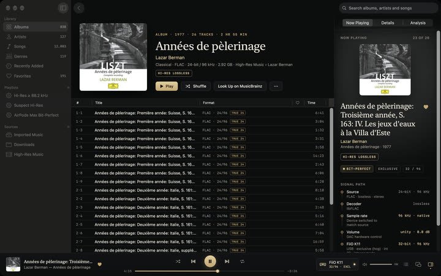

Everything you need to write about Vespertine.
Vespertine is the free, open-source Mac player for surround and hi-res music collections. Extracted SACD 5.1 tracks, DTS CDs, DTS-HD MA, TrueHD and Atmos files share one library, with head-tracked Spatial Audio on AirPods. The signal path shows each step from file to output, with conditions and tests in GPL source anyone can audit.
Channel-for-channel output and receiver bitstream are experimental, untested on real receivers/multichannel DACs; reports wanted. SACD ISO playback is coming in the next release. Dolby Digital Plus Atmos objects are rendered by macOS; TrueHD Atmos and DTS:X play their channel bed.
Fact sheet
| Name | Vespertine (formerly Nocturne) |
|---|---|
| Developer | Alex (Alexander Szeremeta), student and independent developer |
| Price | Free. Open source under the GPL-3.0; no account, subscription, ads or telemetry |
| Platform | macOS 14.4 Sonoma or later, Apple silicon and Intel |
| Current version | 0.10.0 · signed and notarized DMG, updates itself |
| Install | Download the DMG or brew install --cask szeremeta1/tap/vespertine |
| Links | Website · Source code · How to verify bit-perfect playback |
| Tested with | FiiO K11 (every rate to 384 kHz, DoP, integer mode), AirPods Max over USB-C and Bluetooth, MacBook Pro speakers |
| How it's made | Claude Code and Codex wrote most of the code. Alex decided behavior, wrote acceptance tests, and measured playback on his hardware. How it's made |
What it focuses on
- Surround music in one Mac library, from extracted SACD tracks and DTS CDs to TrueHD and DD+ Atmos, with Spatial Audio on AirPods.
- Free GPL-3.0 source anyone can read, build and change.
- A signal path showing rate, word length, gain and channel processing. Bit-perfect conditions live in code, with tests and a verification guide.
Hi-res file analysis is also included. Zero-padding detection is exact; spectral verdicts are estimates with limits. VeraVox and Audirvana AudioScan offer analysis too. Comparison sources.
Trailer
36 seconds, 16:9, 1080p at 60 fps, with sound. Download the MP4 (22 MB). A 4K master is available on request.
Logo
Always lowercase, the crescent always in brass. Please don't recolor, stretch or re-set it. Brand guide (PDF).
Key art
One image per feature, in three sizes: 2400×1350, 1600×900 and 1270×760.


Screenshots
The real app on the developer's own library, 2400×1500. Album art belongs to its owners.




Contact
Press, questions and interview requests: press@szeremeta.org. Community questions: GitHub Discussions. Bugs and device reports: GitHub issues.